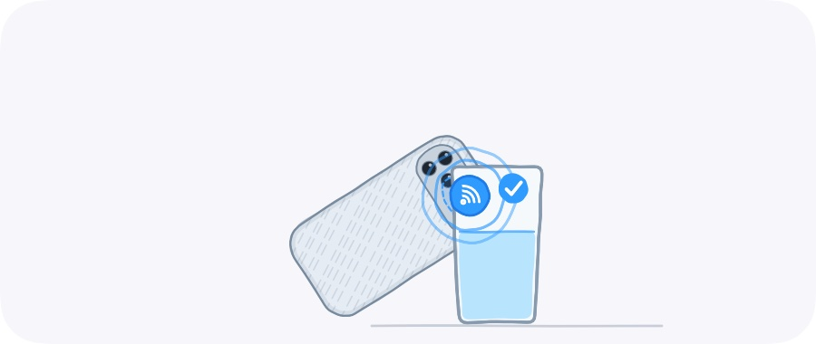

Which stickers to buy
Any NFC sticker of the right chip works, a few for the price of a coffee. Check the listing for these before you buy.
These work
NTAG213, NTAG215 or NTAG216
NFC Forum Type 2, 13.56 MHz, rewritable. NTAG213 is plenty: Wata's link takes about 40 bytes.
Anti-metal, for a metal bottle
On steel or aluminium an ordinary sticker can't be read; anti-metal ones carry a ferrite layer. Plastic and glass take any.
Waterproof, about 25–30 mm round
PET or epoxy stickers survive washing up by hand; keep them out of the dishwasher.
Not these
125 kHz RFID (EM4100, T5577)
Door and parking tags. They aren't NFC, and iPhone can't read them.
MIFARE Classic 1K
Common on access cards. iPhone can't write to it.
Locked or read-only stickers
Already written by someone else. They can still log through the Shortcuts app, but a tap won't open Wata by itself.
Searching for them
Search for “NTAG213 NFC sticker”; for a metal bottle, “anti-metal NTAG213”.
Pairing one

- In Wata, open Settings › Stickers › Add a sticker.
- Hold the top of your iPhone's back to the sticker and keep still: Wata writes a link to it and notes its ID.
- Say what the container is: its name, how much it holds and what is in it.
- Give it a test tap. From then on, hold your iPhone to it with the screen on and tap the banner.
A family can share a sticker: pair it on each iPhone, and each one logs its own taps. A sticker that isn't paired on your iPhone never counts for you.
Where the reader is
On every iPhone the NFC antenna runs along the top edge of the back, by the cameras: hold that part to the sticker. Thick cases and MagSafe rings get in the way. On iPhone Duo, fold it first.